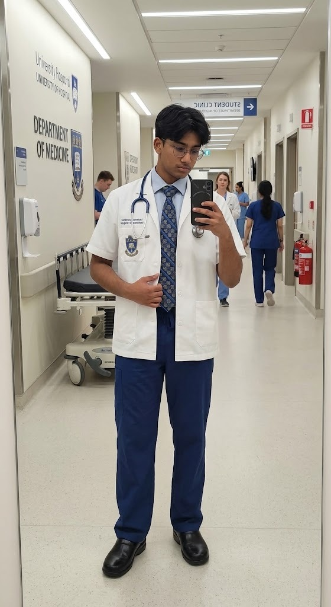

Academic & Math Rigor
Foundation in logical problem-solving through advanced mathematical Olympiad training (ELMO).
Passionate about becoming a cardiologist and making quality, affordable heart care accessible to all, while representing institutional excellence on the global stage.
A quick introduction to who I am, what drives me, and where I'm headed.

A student at the International Islamic School Malaysia (IISM), driven by a deep commitment to preventive healthcare, quality and affordable medicine, and serving my community.
My journey so far has blended academic rigor in STEM and mathematics with diplomacy, faith, and hands-on social impact — organizing community outreach for the Orang Asli community at the National Elephant Conservation Centre, Lanchang.
My long-term mission is clear: to become a Preventive Cardiologist and make quality heart care cheap and accessible for all, regardless of how much money they have.
I'm actively preparing for national science platforms such as the National Science Challenge and Kancil Science Competition to sharpen my knowledge in the sciences behind medicine.
See My Track RecordA foundation built on academic rigor, diplomacy, faith, and social impact.
Foundation in logical problem-solving through advanced mathematical Olympiad training (ELMO).
Distinguished as Best Delegate (Valor AKYC 2023) for elite negotiation and public speaking.
Award-winning Quran Reciter (6th Place International Trophy) committed to communal service (Fard Kifayah).
Head of Merchandising leading resource logistics supporting the local Orang Asli community at the National Elephant Conservation Centre, Lanchang.
Reframing milestones from participation to high-level institutional impact.
As Head of Merchandising for the Earth Science Club, I lead resource logistics and community outreach supporting the local Orang Asli community at the National Elephant Conservation Centre, Lanchang — connecting social entrepreneurship and supply-chain precision with environmental stewardship. Through our fundraising drive, we raised approximately RM 1,200 to support the community.
View VerificationLearning about affordable medicine and early treatments so everyone can get quality heart care regardless of how much money they have. I want to become a Preventive Cardiologist to help prevent heart disease before it starts and make sure good healthcare is cheap and accessible for all.
Explore STEM PillarFull verification of all completed milestones and their institutional ROI.
| Domain | Competition / Initiative | Award / Recognition | Institutional Impact (ROI) |
|---|---|---|---|
Diplomacy |
Valor AKYC Camp 2023 | Best Delegate Medal | Positions IISM as a hub for elite student negotiators and future global leaders. |
Faith & Ethics |
Musabaqah Hifdhil Quran 2025 | 6th Place Trophy | Showcases world-class memorization, precision, and performance discipline under pressure. |
Community |
Earth Science Club (National Elephant Conservation Centre, Lanchang) | Head of Merchandising | Demonstrates social entrepreneurship and logistics mastery in supporting the local Orang Asli community. |
STEM & Math |
ELMO Math Competition | Participation Medal | Verifies quantitative rigor and high-level logical problem-solving essential for medical data analysis. |
Faith & Ethics |
Idrissi, Itqan, Seven Skies Quran & Hadith | Certificates of Participation | Consistent proof of moral grounding and mastery of complex oral traditions (7th Annual Hadith). |